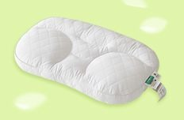
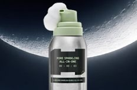
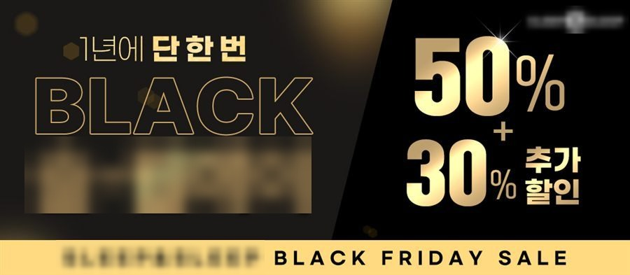
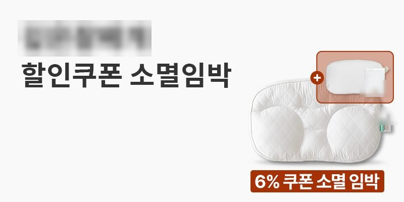
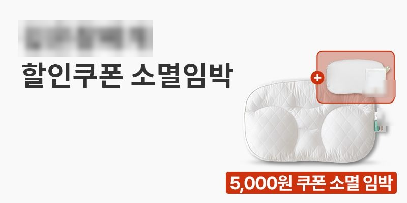
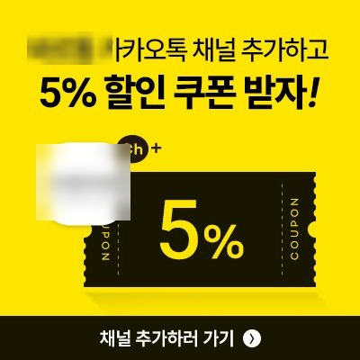

브랜드별 손익 기준을 먼저 정하고,
매일 그 기준으로 마감 관리를 합니다.
요건 중 안 되는 항목도 그대로 적었습니다. 모든 수치의 출처는 사내 일일 광고효율보고 원문 266건입니다.
2025.12 – 2026.08 · 4개 브랜드
누적 매출 140억대 · 월 최대 16억대 단독 집행
브랜드 C · 89일 · 89일 전일 손익분기 상회
일평균 매출 9천만원대
127% → 152% → 153% → 202%
일 마감 ROAS · 동일 예산 규모 구간
Meta · Google · 네이버 · TikTok · 쿠팡 · 카카오를 직접 운영하며 월 8 – 16억대를 배분했습니다. 매체 리포트와 실매출이 다를 때 실매출을 기준으로 판정합니다.
정지 소재 713장의 소구 · 카피 · 브리프 · 검수를 맡았고, 2026.07부터 AI 조합 파이프라인으로 숏폼 62편을 직접 제작해 매일 2편씩 돌리고 있습니다.
프로모션 교체 뒤 매출 하락을 코호트로 갈라 결제전환율 구간을 특정했고, 소재는 노후화 판정 4지표로 A/B와 ON/OFF를 운영합니다.
뷰티는 스킨케어 브랜드를 맡으며 시작했습니다(2026.08 – ). 요건별 판정은 아래 요건 매칭에 적었습니다.
| 기간 | 회사 | 역할 | 한 일 | 매체 |
|---|---|---|---|---|
| 2021.11 – 2023.09 | ㈜핫셀러 | 광고대행사 · 매니저 | 클라이언트 브랜드 제안부터 운영, 결과 보고까지 담당 | SNS · 키워드 · 인플루언서 |
| 2023.12 – 2025.06 | 몹스 → 아이베 | 브랜드 마케팅 · 로봇청소기 | 플래그십 신제품 론칭 기획, 사전예약 CRM 설계 | OOH · 지하철 · TV CF · 디지털 |
| 2025.06 – 2025.11 | New Select | 다브랜드 운영 지원 | 3~4개 계정의 데이터 정리와 운영 지원 | Meta · Google · TikTok |
| 2025.12 – 2026.03 | New Select | 주담당 · 2개 병행 | 브랜드 C 89일 평균 ROAS 267%, 브랜드 D 병행 | + 쿠팡 · 네이버 · 카카오모먼트 |
| 2026.06 – 현재 | New Select | 단독 운영 → 인계 → 재인수 | 월 최대 16억대 단독 집행. 8월에 두 계정을 인계하고 다섯 번째 브랜드 인수 | 동일 · 6개 매체 |
대행사에서 시작해 지금은 일 매출 억 단위 계정의 손익 관리를 혼자 맡고 있습니다.
| 자격 요건 | ||
|---|---|---|
| 유관 경력 2 ~ 5년 | 5년차(2021.11 –) · 인하우스 퍼포먼스 1년 3개월 · 대행사 2년 | O |
| 뷰티 산업군 마케팅 경험 | 스킨케어 브랜드 퍼포먼스 담당 2026.08 – | △ |
| Meta · Google 직접 운영 · 데이터 분석 | 6개 매체 직접 운영 · 266일 통합 ROAS 217% | O |
| 구매 전환 소재를 직접 기획 · 제작 | 정지 713장 기획 · 숏폼 62편 직접 제작 (소재) | O |
| 오픈마켓 · Platform PPC 광고 · 프로모션 연계 | 쿠팡 광고 운영 · 배분값 판정 분리 (도구) · 올리브영 PPC는 없음 | △ |
| AI 제작 · 편집 툴로 소재 양산 | AI 조합 파이프라인 매일 2편 자동 제작 · 포토샵 | O |
| A/B 테스트 설계 · CVR 최적화 | 코호트 분해 (사례 2) · 소재 A/B (사례 1) · 결제전환율 추적 | O |
자격요건 4개 중 3개, 주요업무 3개 중 2개는 그대로 해당합니다. 뷰티 경력 기간과 올리브영 PPC는 부분 해당으로 그대로 적었습니다.
| 브랜드 | 인수 형태 | 담당 기간 | 보고 | 일평균 매출 | 최고 일매출 | ROAS | BEP 상회 |
|---|---|---|---|---|---|---|---|
| 브랜드 C | 인계 | 2025.12.11 – 2026.03.11 | 89일 | 9천만원대 | 1억 5천만원대 | 267% | 89 / 89 |
| 브랜드 D | 인계 | 2026.01.20 – 2026.03.30 | 70일 | 1,900만원대 | 3,200만원대 | 179% | 63 / 70 |
| 브랜드 A | 인계 | 2026.06.29 – 2026.08.24 | 56일 | 8천만원대 | 1억 3천만원대 | 179% | 56 / 56 |
| 브랜드 B | 채널 개설부터 | 2026.07.04 – 2026.08.24 | 51일 | 900만원 미만 | 1,400만원대 | 173% | 50 / 51 |
| 합계 | 2025.12 – 2026.08 · 9개월 | 266일 | 누적 매출 140억대 · 광고비 60억대 | 통합 217% | |||
ROAS = 브랜드 전체 기준(자사몰 + 쿠팡 + 스마트스토어 + 외부몰) · 환불 반영 후 · 인계받은 계정 = A · C · D, 채널 개설부터 담당 = B · 브랜드명은 면접에서
| DAY 00 | 127% |
| DAY 01 | 152% |
| DAY 02 | 153% |
| DAY 03 | 202% |
이때 만든 소재 판정 기준을 다음에 인수한 계정에도 그대로 적용했습니다.
노후화 판정을 빈도 · CTR/CPM 추이 · CPA 추이 · 증분 도달로 다시 정의했습니다.
착지 추정으로 장중에 미달을 확인하고 마감 전에 보고했습니다.
기준 미달 소재를 끄고 새 소재 자리를 만들었습니다. 근본 원인은 소재 수 부족이었습니다.
조정 직후 스냅샷을 한 번 더 찍어 조정 효과를 확인했습니다. 다시 나빠진 구간은 기준의 반례로 기록했습니다.
소재 ON/OFF 판정 기준을 노션에 정리해 팀이 쓰게 했습니다.
이후 개선: 소재 재고를 주 단위 공급 계획으로 관리 · 히어로 SKU 하나에 소재가 몰리는 브랜드일수록 이 사이클이 빨리 옵니다.
두 매체 수치가 다를 때 어느 쪽을 기준으로 볼지 미리 정해두고 운영합니다.
분해 기준: 노출 × CTR × 유입 CVR × 객단가
| 객단가 | −1.7% · 거의 그대로 |
| 전체구매율 | −47% · 급락 |
| 재구매율 | −83% · 동반 급락 |
재구매율까지 빠진 것을 보고, 그 소재가 재구매 트리거 역할도 하고 있었다고 판단했습니다.
정지 소재는 소구 정의, 카피, 발주, 검수까지 맡았고 디자인 제작은 사내 디자인팀입니다. 숏폼 62편은 2026.07부터 AI 조합 파이프라인으로 직접 제작했습니다. 인물 소재는 제외했고 로고와 상표는 가렸습니다.






담당 기간에 본인이 요청한 건만 · 타 팀 요청 제외 · 초상권과 상표는 브랜드 계약 범위라 개인 포트폴리오에서는 가렸습니다
인지도 채널(옥외, 지하철, TV CF)과 구매 채널(사전예약 명단, CRM)의 역할을 나눠 설계했습니다.
| 브랜드 마케팅 지표 | |
|---|---|
| 65% | 사전예약 관심고객 구매 전환율 [기여도 확인] · [원자료 부재] |
| 1,100%↑ | 브랜드 공식 블로그 월간 조회수 · 방문자 300%↑ · 재방문 160%↑ [기간 · 비교 기준 미확인] |
| 44만 | 인플루언서 브랜디드 콘텐츠 최대 조회수 · 구독자 272만 IT 유튜버 [기여도 확인, 제작은 크리에이터] |
운영: 정기 협업 체계 구축(섭외·제안·예산 조율·원고 검수·2차 광고 연계) · CRM 시나리오 단독 설계
그 외: 제품·모델컷 촬영 디렉팅 · 언론 홍보 · PR/바이럴 대행사 관리
소재를 만드는 쪽과 집행하는 쪽을 둘 다 해봤습니다.
Meta Marketing API + 작업 스케줄러 · 매시 11분. 4단 가드(표본 미달 보류 / 성과 자동 보호 / 이중 문턱 OFF 130%·재개 150% / 새벽 하드캡). 1주 dry-run 후 라이브.
매 정시 제품 × 채널 지출·매출 스냅샷. 마감 매출 = 현재 + B + (잔여 집행 × m)로 착지 추정.
KPI 8종을 직전 동일기간 대비 증감과 함께 표시. 매체가 폐기한 구간은 역산하고 “실측 아님”으로 구분 표기.
위 셋은 대표 3종입니다. 2026.07 – 09 사이 같은 방식으로 운영 도구 17종을 만들었습니다.
GA4는 기본만 씁니다. 매체 보고 성과와 실매출이 다를 때 기준을 정하는 일은 위 세 건이 전부 그 일이고, 자사몰 · 오픈마켓 데이터로 다시 맞추면 됩니다.
T-ROAS(목표), L-ROAS(하한), BEP(손익분기) 3단을 먼저 정합니다. 브랜드마다 원가 구조가 달라 손익분기가 다르고, 절대값 하나로 계정을 비교하는 건 손익 구조가 같을 때만 됩니다.
매 정시 스냅샷으로 착지를 추정하고, 못 맞출 날은 마감 전에 보고합니다. 조정 직후 한 번 더 스냅샷을 찍어 조정 효과를 확인합니다.
표본이 없으면 끄지 않습니다. 성과가 좋으면 손대지 않습니다. 끄는 문턱과 켜는 문턱을 다르게 둡니다.
추정치는 범위로 보고합니다. 가설이 틀리면 기각한 사실도 적습니다. 콘텐츠팀에는 지표 대신 소재가 이탈하는 구간을 보여줍니다.
공개 정보 기반 추정 · 조사일 2026.09.15 · 내부 데이터에 접근하지 않았습니다
2016년 설립, 피부 · 기후 데이터 기반 맞춤 화장품 구독으로 시작해 자사몰 D2C가 축. 비건 · 의식 있는 아름다움을 브랜드 언어로 씁니다. 2026년 투자 유치로 글로벌 확장 추진.
→ 구독 · 재구매 브랜드는 광고 ROAS가 재구매에 귀속돼 부풀기 쉽습니다. 신규 CAC와 재구매를 분리하는 정의가 첫 과제입니다.
자사몰 구독 + 올리브영 온 · 오프라인 + 오픈마켓. 공고가 올리브영 등 Platform PPC와 오픈마켓 프로모션 연계를 같이 적었습니다.
→ 자사몰 직ROAS와 브랜드 전체 ROAS를 따로 두는 기준이 먼저입니다. 쿠팡 배분값을 분리한 경험과 같은 구조입니다 (도구).
공고가 AI 제작 · 영상 편집 툴로 소재를 양산하는 사람을 찾습니다. 전 직원에게 Claude를 제공한다고 적었습니다.
→ 매일 2편 자동 제작 파이프라인을 그대로 옮기고, 판정 기준(표본 하한 · 권리 · 배너)을 같이 붙입니다. 양산보다 판정이 먼저입니다.
비건 · 지속가능 메시지가 브랜드 자산이라 자극적인 전환 소재와 충돌할 수 있습니다. 카피와 레이아웃 감도를 공고가 따로 적었습니다.
→ 브랜드 라인과 전환 라인을 나눠 같은 기준으로 판정하고, 브랜드 라인 소재는 증분 도달로 따로 봅니다.
출처: 채용 공고 · 자사몰 · 투자 보도(2026) · 강점은 브랜드 언어와 구독. 광고는 그 위에 증분을 얹는 선에서. 공개 정보 기반 추정이라 틀린 부분은 면접에서 여쭙고 싶습니다.
산출물: 손익 기준선 1장, 채널 귀속 정의서 1장
구독 브랜드는 광고 ROAS가 실제보다 좋아 보이기 쉽습니다. 그걸 먼저 갈라 놓아야 이후 숫자가 전부 맞습니다.
산출물: 매체 × SKU 판정 기준표, 소재 ON/OFF 기준, 첫 A/B 결과 보고
진단의 가설을 데이터로 확인하거나 기각합니다. 국내에서 만들어 두 계정에 적용한 기준을 그대로 씁니다.
산출물: 자동 리포트, 월 예산 재배분안, 제작 · 판정 문서
국내에서 매시 11분 스냅샷과 자동 판정을 돌렸습니다. 매체 API 기준이라 이식 비용이 작습니다.
90일 안에 매출을 올리겠다는 계획은 아닙니다. 90일 뒤에 팀이 그대로 쓸 수 있는 손익 기준선과 소재 판정 · 제작 문서를 남기는 것이 목표입니다.
공고에 소재를 직접 만들고 AI로 양산하고 오픈마켓까지 보는 사람을 적은 회사는 드뭅니다. 지금 매일 하고 있는 일과 같아서, 처음부터 결과로 말할 수 있는 자리라고 봤습니다.
4개 브랜드를 번갈아 맡으면서 브랜드 하나를 끝까지 맡아 키워보고 싶다는 생각이 커졌습니다. 브랜드 언어가 분명한 곳에서 전환 소재와 브랜드 소재를 같이 판정해 보고 싶습니다.
비건이라는 말을 지키면서 광고가 얼마를 더 만들었는지 정확히 말할 수 있는 사람이 되고 싶습니다. 톤28에서 그 첫 사례를 만들고 싶습니다.